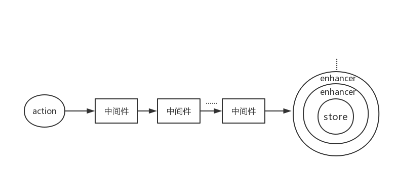

从零开始搭建React应用（二）——React应用架构
Contents
上一篇文章——从零开始搭建 React 应用（一）——基础搭建讲述了如何使用 webpack 搭建一个非常基础的 react 开发环境。本文将详细讲述搭建一个 React 应用的架构。
仓库地址：https://github.com/MrZhang123/Web_Project_Build/tree/master/react-webpack
redux
在我们开发过程中，很多时候，我们需要让组件共享某些数据，虽然可以通过组件传递数据实现数据共享，但是如果组件之间不是父子关系的话，数据传递是非常麻烦的，而且容易让代码的可读性降低，这时候我们就需要一个 state（状态）管理工具。常见的状态管理工具有 redux，mobx，这里选择 redux 进行状态管理。值得注意的是 React 16.3 带来了全新的Context API，我们也可以使用新的 Context API 做状态管理。
Redux 是 JavaScript 状态容器，提供可预测化的状态管理。可以让你构建一致化的应用，运行于不同的环境（客户端、服务器、原生应用），并且易于测试。不仅于此，它还提供非常好的开发体验，比如有一个时间旅行调试器可以编辑后实时预览。
redux 的数据流如下图所示：

redux 的三大原则：
- 整个应用的
state都被存储在一颗 object tree 中，并且这个 object tree 只存在于唯一的 store 中，但是这并不意味使用 redux 就需要将所有的 state 存到 redux 上。 - state 是只读的，唯一改变 state 的方式是出发
action，action是一个用于描述已发生事件的普通对象。 - 使用纯函数来执行修改，为了描述 action 如何改变 state tree，需要编写 reducers。
中间件（Redux middleware）
Redux middleware 提供位于 action 发起之后，到达 reducer 之前的扩展点。dispatch 发起的 action 依次经过中间件，最终到达 reducer。我们可以利用 Redux middleware 来进行日志记录、创建崩溃报告、调用异步接口或者路由等等。本质上来讲中间件只是拓展了 store.dispatch 方法。
增强器（Store enhancer）
store enhancer 用于增强 store 的功能，一个 store enhancer 实际上就是一个高阶函数，返回一个新的强化过的 store creator。
|
|
可以看到logEnhancer改变了 store 的默认行为，在每次dispatch前后，都会输出日志。

react-redux
redux 本身是一个状态 JS 的状态库，可以结合 react，vue，angular 甚至是原生 JS 应用使用，为了让 redux 帮我们管理 react 应用的状态，需要把 redux 与 react 连接，官方提供了react-redux库。
react-redux 提供Provider组件通过 context 的方式向应用注入 store，然后组件使用connect高阶方法获取并监听 store，然后根据 store state 和组件自身的 props 计算得到新的 props，注入该组件，并且可以通过监听 store，比较计算出的新 props 判断是否需要更新组件。
|
|
整合 redux 到 react 应用
合并 reducer
在一个 react 应用中只有一个 store，组件通过调用 action 函数，传递数据到 reducer，reducer 根据数据更改对应的 state。但是随着应用复杂度的提升，reducer 也会变得越来越大，此时可以考虑将 reducer 拆分成多个单独的函数，拆分后的每个函数负责独立管理 state 的一部分。
redux 提供combineReducers辅助函数，将分散的 reducer 合并成一个最终的 reducer 函数，然后在 createStore 的时候使用。
整合 middleware
有时候我们需要多个 middleware 组合在一起形成 middleware 链来增强store.dispatch，在创建 store 时候，我们需要将 middleware 链整合到 store 中，官方提供applyMiddleware(...middleware)将 middleware 链在一起。
整合 store enhancer
store enhancer 用于增强 store，如果我们有多个 store enhancer 时需要将多个 store enhancer 整合，这时候就会用到compose(...functions)。
使用compose合并多个函数，每个函数都接受一个参数，它的返回值将作为一个参数提供给它左边的函数以此类推，最右边的函数可以接受多个参数。compose(funA,funB,funC)可以理解为compose(funA(funB(funC())))，最终返回从右到左姐收到的函数合并后的最终函数。
创建 Store
redux 通过createStore创建一个 Redux store 来以存放应用中所有的 state，createStore的参数形式如下：
|
|
所以我们创建 store 的代码如下：
|
|
之后将创建的 store 通过Provider组件注入 react 应用即可将 redux 与 react 应用整合在一起。
注：应用中应有且仅有一个 store。
React Router
React Router 是完整的 React 的路由解决方案，它保持 UI 与 URL 的同步。项目中我们整合最新版的 React Router v4。
在 react-router v4 中 react-router 被划分为三个包：react-router，react-router-dom 和 react-router-native，区别如下：
- react-router：提供核心路由组件和函数
- react-router-dom：供浏览器使用的 react router
- react-router-native：供 react native 使用的 react router
redux 与 react router
React Router 与 Redux 一起使用时大部分情况下都是正常的，但是偶尔会出现路由更新但是子路由或活动导航链接没有更新。这个情况发生在：
- 组件通过
connect()(Comp)连接 redux。 - 组件不是一个“路由组件”，即组件并没有像
<Route component={SomeConnectedThing} />这样渲染。
这个问题的原因是 Redux 实现了shouldComponentUpdate，当路由变化时，该组件并没有接收到 props 更新。
解决这个问题的方法很简单，找到connect并且将它用withRouter包裹：
|
|
将 redux 与 react-router 深度整合
有时候我们可能希望将 redux 与 react router 进行更深度的整合，实现：
- 将 router 的数据与 store 同步，并且从 store 访问
- 通过 dispatch actions 导航
- 在 redux devtools 中支持路由改变的时间旅行调试
这些可以通过 connected-react-router 和 history 两个库将 react-router 与 redux 进行深度整合实现。
官方文档中提到的是 react-router-redux，并且它已经被整合到了 react-router v4 中，但是根据 react-router-redux 的文档，该仓库不再维护，推荐使用 connected-react-router。
首先安装 connected-react-router 和 history 两个库：
|
|
然后给 store 添加如下配置：
- 创建
history对象，因为我们的应用是浏览器端，所以使用createBrowserHistory创建 - 使用
connectRouter包裹 root reducer 并且提供我们创建的history对象，获得新的 root reducer - 使用
routerMiddleware(history)实现使用 dispatch history actions，这样就可以使用push('/path/to/somewhere')去改变路由（这里的 push 是来自 connected-react-router 的）
|
|
在根组件中，我们添加如下配置：
- 使用
ConnectedRouter包裹路由，并且将 store 中创建的history对象引入，作为 props 传入应用 ConnectedRouter组件要作为Provider的子组件
|
|
这样我们就将 redux 与 react-router 整合完毕。
使用dispatch切换路由
完成以上配置后，就可以使用dispatch切换路由了：
|
|
react-router-config
react-router v4 之前——静态路由
在 react-router v4 之前的版本中，我们可以直接使用静态路由来配置应用程序的路由，它允许在渲染之前对路由进行检查和匹配。
在 router.js 中一般会有这样的代码：
|
|
然后在初始化的时候把路由导入，然后渲染：
|
|
react-router v4——动态路由
从 v4 版本开始，react-router 使用动态组件代替路径配置，即 react-router 就是 react 应用的一个普通组件，随用随写，不必像之前那样，路由跟组件分离。因此 react 应用添加 react-router，首先引入我们需要的东西。
|
|
这里我们将BrowserRouter引入并重新命名为Router，BrowserRouter允许 react-router 将应用的路由信息通过context传递给任何需要的组件。因此要让 react-router 正常工作，需要在应用程序的根结点中渲染BrowserRouter。
|
|
以还使用了Route，当应用程序的 location 匹配到某个路由时，Route将渲染制定的 component，否则渲染null。
想要加入更多的路由，添加Route组件即可，但是这样的写法也许我们会感觉到有点儿乱，因为毕竟路由被分散到组件各处，很难像以前那样很容易的看到整个应用的路由，而且如果项目之前是用的 react-router v4 之前的版本，那么升级 v4 也是成本很大的，官方为解决该问题，提供了专门用来处理静态路由配置的库——react-router-config。
添加 react-router-config 实现使用静态路由
添加了 react-router-config 之后，我们就可以写我们熟悉的静态路由了。同时，利用它，可以将路由配置分散在各个组件中，最后使用renderRoutes将分散的路由片段在根组件合并，渲染即可。
配置静态路由：
|
|
然后在根组件中合并，渲染：
|
|
renderRoutes其实帮我们做了类似的事儿：
|
|
这样就给 React 应用添加了静态路由。
添加模块热替换(Hot Module Replacement)
模块热替换（HMR）功能会在应用程序运行过程中替换、添加或删除模块，而无需重新加载整个页面。主要通过以下几种方式：
- 保留在完全重新加载页面时丢失的应用状态
- 只更新变更的内容以节省开发时间
- 更改样式不需要刷新页面
在开发模式中，HMR 可以替代 LiveReload，webpack-dev-server 支持hot模式，在试图重新加载整个页面之前，hot模式尝试使用 HMR 来更新。
启用 HMR
在 webpack 配置文件中添加 HMR 插件：
|
|
这里添加的NamedModulesPlugin插件，
设置 webpack-dev-server 开启hot模式：
|
|
这样，当修改 react 代码的时候，页面会自动刷新，修改 css 文件，页面不刷新，直接呈现样式。
但是会发现一个问题，页面的自动刷新会导致我们 react 组件的状态丢失，那么能否做到更改 react 组件像更改 css 文件那样，页面不刷新（保存页面的状态），直接替换呢？答案是肯定的，可以使用 react-hot-loader。
添加 react-hot-loader
添加 react-hot-loader 非常简单，只需要在根组件导出的时候添加高阶方法hot即可：
|
|
这样，整个应用在开发时候就可以修改 react 组件而保持状态了。
注：
在开发过程中，查阅了一些文章说，为了配合 redux，需要在 store.js 中添加如下代码：
|
|
但是，在 react-hot-loader v4 中，是不需要的，直接添加hot就可以了。
异步加载组件（Code Splitting）
完成以上配置后，我们的主体已经搭建的差不多了，但是当打开开发者工具会发现，应用开始加载的时候直接把整个应用的 JS 全部加载进来，但是我们期望进入哪个页面加载哪个页面的代码，那么如何实现应用的 Code Splitting 呢？
其实实现 React Code Splitting 的库有很多，例如：
选用其中之一即可，我项目中选用的是 react-loadable。
之前我们已经在项目中配置了静态路由，组件是直接引入的，我们只需要对之前的直接引入的组件做处理就可以，代码如下：
|
|
异步任务流管理
实现异步操作的思路
大部分情况下我们的应用中都是同步操作，即 dispatch action 时，state 会被立即更新，但是有些时候我们需要做异步操作。同步操作只要发出一种 Action 即可，但是异步操作需要发出三种 Acion。
- 操作发起时的 Action
- 操作成功时的 Action
- 操作失败时的 Action
为了区分这三种 action，可能在 action 里添加一个专门的status字段作为标记位：
|
|
或者为它们定义不同的 type：
|
|
所以想要实现异步操作需要做到：
- 操作开始时，发出一个 Action，触发 State 更新为“正在操作”，View 重新渲染
- 操作结束后，再发出一个 Action，触发 State 更新为“操作结束”，View 再次重新渲染
redux-thunk
异步操作至少送出两个 Action，第一个 Action 跟同步操作一样，直接送出即可，那么如何送出第二个 Action 呢？
我们可以在送出第一个 Action 的时候送一个 Action Creator 函数，这样第二个 Action 可以在异步执行完成后自动送出。
|
|
在组件加载成功后，送出一个 Action 用来请求数据，这里的fetchPosts就是 Action Creator。fetchPosts 代码如下：
|
|
fetchPosts是一个 Action Creator，执行返回一个函数，该函数执行时dispatch一个 action，表明马上要进行异步操作；异步执行完成后，根据请求结果的不同，分别dispatch不同的 action 将异步操作的结果返回回来。
这里需要说明几点：
fetchPosts返回了一个函数，而普通的 Action Creator 默认返回一个对象。- 返回的函数的参数是
dispatch和getState这两个 Redux 方法，普通的 Action Creator 的参数是 Action 的内容。 - 在返回的函数之中，先发出一个
store.dispatch({type: SET_DEMO_DATA.PENDING})，表示异步操作开始。 - 异步操作结束之后，再发出一个
store.dispatch({ type: SET_DEMO_DATA.SUCCESS, payload: response })，表示操作结束。
但是有一个问题，store.dispatch正常情况下，只能发送对象，而我们要发送函数，为了让store.dispatch可以发送函数，我们使用中间件——redux-thunk。
引入 redux-thunk 很简单，只需要在创建 store 的时候使用applyMiddleware(thunk)引入即可。
开发调试工具
开发过程中免不了调试，常用的调试工具有很多，例如 redux-devtools-extension，redux-devtools，storybook 等。
redux-devtools-extension
redux-devtools-extension 是一款调试 redux 的工具，用来监测 action 非常方便。
首先根据浏览器在Chrome Web Store或者Mozilla Add-ons中下载该插件。
然后在创建 store 时候，将其加入到 store enhancer 配置中即可：
|
|
写在最后
本文梳理了自己对 React 应用架构的认识以及相关库的具体配置，进一步加深了对 React 应用架构的理解，但是像数据 Immutable ，持久化，webpack 优化等这些，本文并未涉及，未来会继续研究相关的东西，力求搭建更加完善的 React 应用。
另外在搭建项目过程中升级最新的 babel 后发现@babel/preset-stage-0 即将弃用，建议使用其他代替，更多细节参考：
附
关键字：
- redux
- react-router
- react-router-config
- 异步加载（Code Splitting）
- 热更新
- 异步任务管理——redux-thunk
- react-redux
- redux-devtools-extension
部分用到的库
参考
- React 应用架构设计
- 浅析 Redux 的 store enhancer
- createStore
- applyMiddleware
- combineReducers
- compose
- [译]简明 React Router v4 教程
- React Router 与 Redux 整合
- 模块热替换(hot module replacement)
- react-router4 基于 react-router-config 的路由拆分与按需加载
- React Router 4 简介及其背后的路由哲学
- 异步 Action
- redux 中间件之 redux-thunk
- Redux 入门教程（二）：中间件与异步操作